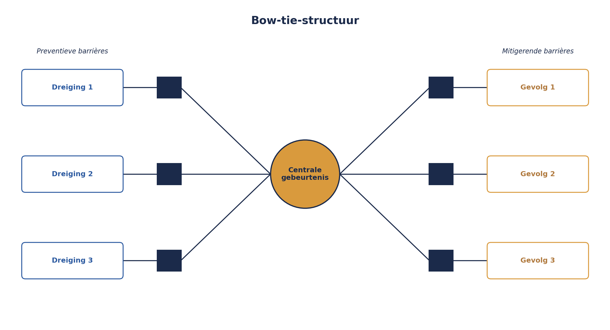

Deel 16 — Bow-tie-analyse: oorzaken, gevolgen en barrières die je test
Niveau 2 — Professional · Slidedeck (23 slides)
Slide 1 — Titel
Risicomanagement Deel 16 — Bow-tie-analyse: oorzaken, gevolgen en barrières die je test
Niveau 2: Professional
Slide 2 — Terugblik
Monte Carlo. P10/P50/P90. Contingency.
Vandaag: een heel ander soort blinde vlek.
Slide 3 — Acht maanden, “geïmplementeerd”
Een validatiecontrole. Netjes ingevuld in het register.
Nooit getest.
Slide 4 — De vraag die niemand kon beantwoorden
“Wanneer is voor het laatst getest of dit daadwerkelijk werkt?”
Slide 5 — Ze bestaat. Werkt ze?
Niemand weet het.
Slide 6 — Bow-tie
Dreigingen (links) → Centrale gebeurtenis → Gevolgen (rechts)
Met barrières op beide zijden.
Slide 7 — Anders dan de risicozin
Eén oorzaak, één gebeurtenis, één gevolg — lineair.
Bow-tie: meerdere dreigingen, meerdere gevolgen, tegelijk.
Slide 8 — Figuur 16-1

Slide 9 — Sanne’s bow-tie
Centrale gebeurtenis: onjuiste deelnemersgegevens in de Verwerkingsengine.
Slide 10 — Drie dreigingen, drie barrières
Invoerfout werkgever · Foutieve conversie · Koppelfout P1-P2
Slide 11 — Figuur 16-2

Slide 12 — Opdracht 16.1 — 30 minuten
Bouw je eigen bow-tie. Twee dreigingen, twee gevolgen.
Slide 13 — Twee vragen per barrière
Opzeteffectiviteit — is het ontwerp geschikt? Werkingseffectiviteit — functioneert het ook echt, nu?
Slide 14 — Opzet ≠ werking
De validatiecontrole: goede opzet.
Werking: nooit vastgesteld.
Slide 15 — Kernzin 10
Een maatregel die nooit op werking is getoetst, is geen beheersing — het is hoop met een naam erop.
Slide 16 — Figuur 16-3

Slide 17 — Opdracht 16.2 — 15 minuten
Drie uitspraken. Opzet, werking, of allebei?
Slide 18 — Drie toetsmethoden
Steekproef — representatief, lager volume Walkthrough — snel, verkennend
Slide 19 — Derde toetsmethode
Doorlopende KRI — hoog volume, continue signalering
Slide 20 — Opdracht 16.3 — plenair, 15 minuten
Drie barrières. Welke toetsmethode past?
Slide 21 — Wat Sanne vond
2 van 3 fouten: tegengehouden. 1 van 3: een software-update had de regels stilzwijgend uitgeschakeld.
Zes maanden onopgemerkt.
Slide 22 — Escalatiefactoren
Geen dreiging zelf — maar iets dat meerdere barrières tegelijk verzwakt.
Dezelfde logica als correlatie (deel 15).
Slide 23 — Voor deel 17
Huiswerk: opdracht 16.4
Deel 17: wie is eigenaar van een risico dat niet bij één project hoort? En waarom mag je scores niet zomaar optellen?